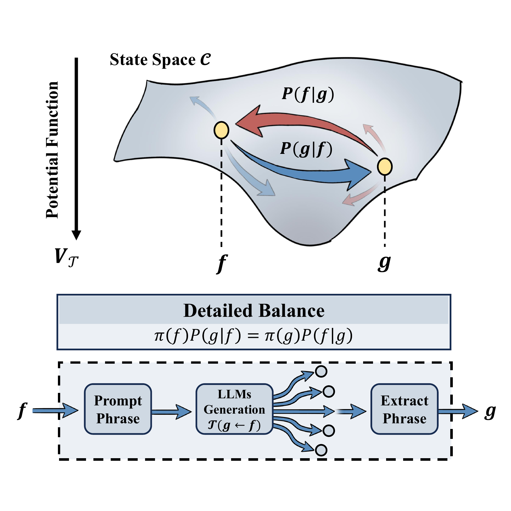

同一语义允许多条不同的 token 序列实现
A statistical-physics lens
当生成变成一种
可测的动力学
一个生活在特定 context 中的 LLM agent，如何在语义状态间移动？把它的转移通道量出来，再寻找组织这些转移的有效势。

01 / MOTIVATION
定义语义状态，
并用 MCMC 测量通道。
同一个意思，可以由许多不同的 token 序列表达。要理解 agent 的行为，就要从逐 token 的生成概率走向语义状态。
重复生成并测量固定 context 下不同语义出现的频率
如何描述语义状态间的动力学联系？
MICROSCOPIC DEFINITION
固定环境 c
𝒯 是一整束微观轨迹的概率之和
01 / 同一个输入
f xf
由状态 f 与固定 context 构造 prompt
LLM 逐 token 生成：不同序列，不同概率
02 / 通向同一个 g 的微观轨迹
03 / 汇总这些轨迹的概率
轨迹 y⁽¹⁾p₁ = pθ(y⁽¹⁾ | xf)
y₁⁽¹⁾→y₂⁽¹⁾→⋯→EOS
语义提取→g
轨迹 y⁽²⁾p₂ = pθ(y⁽²⁾ | xf)
y₁⁽²⁾→y₂⁽²⁾→⋯→EOS
语义提取→g
许多不同轨迹，同一个语义状态
g
𝒯(g←f) = p₁ + p₂ + ⋯
把所有通向 g 的轨迹概率相加
沿一条轨迹：条件概率相乘
pθ(y|xf) = ∏t=1
L pθ(yt|y<t,xf)
由所有能够实现 g 的轨迹推出
𝒯(g←f) = ∑y: state(y)=g pθ(y|xf)
02 / THEORY
找出唯一主导通路，
再让低概率边显现。
先取一个可控极限：可达两态之间只有一条主导路径。再为每条转移加入微弱返回，让有序骨架获得可返回的概率。正逆概率的强弱比，成为有效描述的入口。
假设 A：任意可达 f → g，路径至多一条
美丽的贝加尔湖有许多儿子，
——俄罗斯传说 贝加尔湖与安加拉河
却只有一个女儿。
假设训练在模型中塑造的是一个势函数，而不只是一份规则清单。在这个极限中，竞争路径在训练中被压低，只留下一条主导通路，同一祖先不能经两条路抵达同一叶子。
f ⇝ g ⇒ #paths(f→g) ≤ 1
假设 B：每条路径都带着概率返回边
我们所有探索的终点，
——艾略特《四个四重奏 · 小吉丁》
将是回到出发的地方。
语言模型不是逻辑推理而是概率预测，因此有主导方向，不应该代表绝不返回。概率采样与语义的不确定性，启发我们为每条主导转移加入微弱回边。在这项假设下，正逆概率比由有效势差组织。
log[𝒯(g←f)/𝒯(f←g)] = β[V(f)−V(g)]
从真实转移中剪出唯一通路骨架
主导路径
概率返回边
状态编号对应一个实测状态
唯一通路骨架 + 概率返回边
同一组通道的 𝒯(f | g) · 按势能排序
条件自由能 F 和有效势 V
F：一整束轨迹的条件自由能
把序列 y 的概率写成下面的能量形式。Eθ 描述这条序列的有效能量，Zθ(xf) 是所有可能输出的权重总和，用于归一化。
pθ(y|xf) = e−Eθ(xf,y) / Zθ(xf)
固定输入 f，把所有通向 g 的序列权重加起来，再取负对数，就是 F(g|f)。它描述转移中的整体能量差。
F(g|f) = −log ∑y: state(y)=g e−Eθ(xf,y)
F 与 𝒯：相差一个归一化项
−log 𝒯(g←f) = F(g|f) + log Zθ(xf)
对同一个输入 f，F(g|f) 越低，转移到 g 的概率越高。但 F 并非直接等同于 −log𝒯，还要计入输入对应的归一化项。
F 与 V：局部方向差由全局势组织
在细致平衡成立时，正逆通道的条件自由能之差满足：
F(f|g) − F(g|f)= β[V(f) − V(g)]+ log Zθ(xf) − log Zθ(xg)
右侧是同一个状态函数 βV+log Zθ 在 f、g 两点的差。这表明当条件自由能F满足 exact 1-form 时，存在一个全局有效势 V，可以用来描述系统的局部行为。这就是所假设条件的微观含义。
03 / EXPERIMENT
让真实的边，
决定势能的排序。
从排序算法中抽象出一个目标：寻找让转移更倾向于“向下”的势能排列。最小作用量把这个目标变成可优化的量。保留真实数据中的局部转移通道，让状态逐渐找到对应全局有效势，看作用量如何随之下降。
𝒮[V] = 1/N ∑f,g 𝒯(g←f) K(V(f)−V(g))
K(x)=log(1+e−x)
只更新 V，不改动任何转移计数
RELAXATION ON IDEASEARCHFITTER
在真实通道上寻找势能
沿同一批真实状态与转移边更新势能；点沿势能方向移动，代表转移中势能下降的绿色边增多，作用量下降。
下降 V(g)<V(f)
上升 V(g)>V(f)
箭头指向下一状态 · 线宽 ∝𝒯
点击节点查看状态表达式、采样数和势能。
作用量随迭代下降
全图作用量 𝒮
—
下降边 / 总边数
—
显示状态 / 拟合总状态
—
行是目标 f，列是源 g。按势能重新排列状态，深色表示更强的转移，上三角对应向低势能流动。观察转移的方向性在热图中显现。
点击格子查看转移概率 𝒯(f|g)。
每个点连接一对状态的势差与实测正逆概率比。优化只改变势差，观察点云如何向对角线靠拢。
点击点查看势差与实测正逆概率比。
ROBUSTNESS ACROSS TASKS AND MODELS
跨越任务和时间检验理论
从表达式到单词与数字，切换任务，看同一条势差关系如何出现在不同的生成空间中。每个任务的 Pearson r 都在该任务的全部合格双向状态对上计算。不同任务上模型均表现出向细致平衡的趋势。
沿时间比较同一任务池中的模型版本。这里先对每个任务的合格双向状态对计算 rt（比较 log[T(g←f)/T(f←g)] 与 ΔV），再按该任务的双向对数量 nt 加权计算皮尔逊相关系数：R = Σ ntrt / Σ nt。横轴按版本先后排列，快照于 2026-08-14 09:38（北京时间）冻结。随着模型迭代，细致平衡的趋势逐渐增强。
04 / APPLICATION
从描述行为，
走向设计行为。
模型容易到达的地方，未必是任务需要的地方。若有效势描述满足稳态收敛条件，π(f)∝e−βV(f)。通过加入目标偏置重塑稳态，可以让搜索更多地到达目标区域。
识别原有偏好
V(f)
→
改变外部偏置
βV(f) − βtarget(f)
→
引导模型行为
πh(f)
SEARCH DYNAMICS ON IDEASEARCHFITTER
真实状态空间演示
外部偏置如何把随机轨迹推向目标区域？
在给定的状态空间中，逐渐增加偏置的大小，观察一个迭代智能体在状态空间上游走的轨迹如何从原本的方向向外部偏置鼓励的方向漂移。
最低势能所在的 MSE
全图最低 MSE
当前偏置下轨迹可达的最低 MSE
探索阶段原有偏好
当前轨迹的最低 MSE—
05 / DISCUSSION
若干讨论，
非平衡效应、方法论和意义。
一个势能，不必穷尽生成的全部细节。它的价值在于：明确主要结构，并说明如何修正。它把不同视角的研究连接起来。
THE BOUNDARY
转移路径有环时的平衡态
主导转移弱返回
定义势差时，正向与返回通道已经同时存在。现实中，同一祖先可能经不同路径抵达同一后继，此时，
log(P₊ / P₋) = 0,就是待检验的零假设，其中正向一周的概率乘积 P₊ ，逆向为 P₋。即：这些环上的正逆概率比，能否仍由同一个势能统一描述？
正文闭环检验在当前采样误差内，
在当前采样误差内，
尚不能拒绝正逆对称。
若检测到可靠的非零环流，单一势能才不足以描述全部方向性，需要进一步引入非平衡修正。
THE METHOD
微扰论的应用
不必先给复杂现实找到一条精确规律。先提取主导结构，把它推进到可解的极限，再用数据判断这个极限是否能够描述现实。
- 识别主导结构
从转移中看见结构
语言模型的生成有倾向性，生成通道稀疏。
- 建立自洽描述
由正逆概率比定义势
基于概率模型的本质给出最小描述。
- 检验现实情况
在实际通道上检验势
比较绕现实中多路径的正逆概率乘积，检验势能描述。
THE BRIDGE
向微观追溯，向宏观预测
如同热力学不必追踪每个粒子，势能表示把完整输出的 token 序列构成的系综压缩为可测的宏观状态关系：向下可以追溯生成过程的 token 动力学，向上可以组织稳态、响应与搜索的设计。
微观生成
许多 token 轨迹
研究生成过程中 token 的微观动力学
桥梁𝒯 → V
用全局势能表示组织局部状态转移
宏观行为
少数可检验的量
稳态 π响应 χ⋯
研究真实 agent 的宏观行为模式